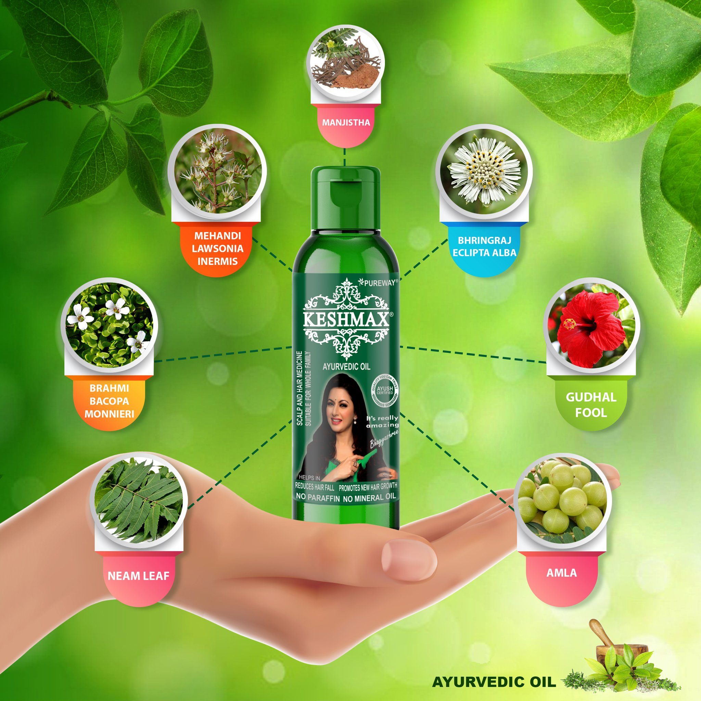
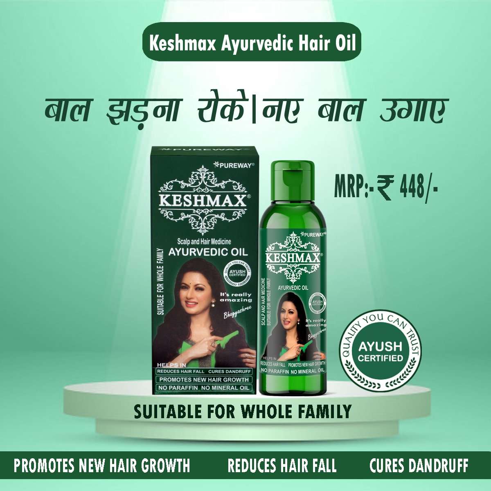

STOP HAIR FALL, SAVE YOUR HAIR NATURALLY, NO CHEMICAL USED

Keshmax Ayurvedic Hair Oil
- Reduces Hair Fall
- For Long & Strong Hair
- Stops Hair Loss
- Promotes New Hair Growth

LIQUID AYURVEDIC HAIR FALL CONTROL OIL - KESHMAX
# Brand:- Keshmax
# Model name:- Keshmax Ayurvedic Medicinal Hair Oil
Ingredients:- Amla, Gudhal Phool, Bhringraj, Mehandi, Brahmi, Neem leaf, Yashti Madhu, Jatamansi, Harar (Big), Bahera, Manjistha, Nagkesar, Til Oil
Product Benefits:- Reduces Hair Fall, Stops Hair Loss, Promotes New Hair Growth, Breakage Control, etc
Ideal for:- Men & Women
# Hair Type:- All
# Liquid Volume:- 240 ml (Pack of 2)
# Complete Ayurvedic Treatment for Hair Fall and Dandruff. Keshmax Ayurvedic Hair Oil is an Ayurvedic Proprietary medicinal preparation without side effects. Keshmax is a complete Ayurvedic formula, which is prepared as per Charaka Samhita and using 12 precious herbs & prepared without water & paraffin. Keshmax Ayurvedic Medicinal Oil is for HAIR FALL, DANDRUFF, DRYNESS. It's also helpful in REGROWTH of hair. For Chronic hair problems, regular use of Keshmax Ayurvedic Medicinal Oil. It is advised for at least 2 months. Keshmax Ayurvedic Medicinal Oil has natural Vitamin A, E, C & Magnesium which is approved by ITC Laboratory (Govt. Approved).


About this item
# Keshmax Ayurvedic Hair Oil has Great Quality and is Very Effective for Reduce Hair Fall & Grow New Hair.
# Contains the goodness of 12 Ayurvedic herbs like Amla, Gudhal Phool, Bhringraj, Mehandi, Brahmi, Neem leaf, Yashti Madhu, Jatamansi, Harar (Big), Bahera, Manjistha, Nagkesar, Til Oil.
# Helpful in all hair problems like dandruff, hair fall, dryness, etc.
# Applied For Anti-dandruff, Prevents Greying, Healthy Scalp, Anti-hair Fall. 100% Ayurvedic Medicinal Hair Oil.
# Country of Origin: India
KESHMAX AYURVEDIC HAIR OIL PROMOTES HAIR GROWTH - AYURVEDIC HAIR OIL
Keshmax Ayurvedic Hair Oil, natural hair oil is the best product for hair growth. It is a herbal hair oil that is effective in promoting healthy hair growth and keeping the hair away from dryness. Keshmax Ayurvedic hair oil promotes hair growth by nourishing the follicles and it improves the hair. The hair oil works on the roots of the hair to make it naturally stronger.
Ayurvedic hair oils are known to promote hair growth and repair damaged and dry hair. It is also known to be beneficial for the scalp, which is why it is recommended to wash your hair before applying the oil. It is advised that the oil be applied to the ends of the hair to avoid clogging the hair follicles. This Ayurvedic hair oil is made using the finest high-quality herbs.
Call Now:- 82783-88999